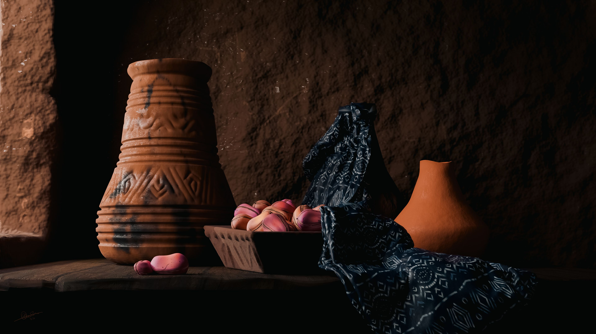

Precursor auction
Ìgbáradì
Ìgbáradì means Preparation. The piece was conceived during my process of building the visual and cultural world of Ayo. It depicts a carefully arranged scene containing:
- Ornate earthen pitchers
- Adire (Yoruba resist-dyed fabric)
- A bowl of kolanut (Obi)
Each of these objects carries deep cultural meaning within Yoruba traditions, Pitchers keep water cool throughout the day, kolanut is central to ceremonies, greetings, and divination, and Adire represents a celebrated craft with generations of mastery and countless variations. Igbaradi reflects my research into the traditions I aim to honor, remember and showcase. It also serves as the direct precursor to “The Meeting,” the opening chapter of the series, a table prepared for the chief’s council gathering. In every sense, this piece is the first step into the world I am building, and I am deeply excited to share it with you. Every element in the artwork was individually sculpted, painted, and simulated with care to achieve its final form.